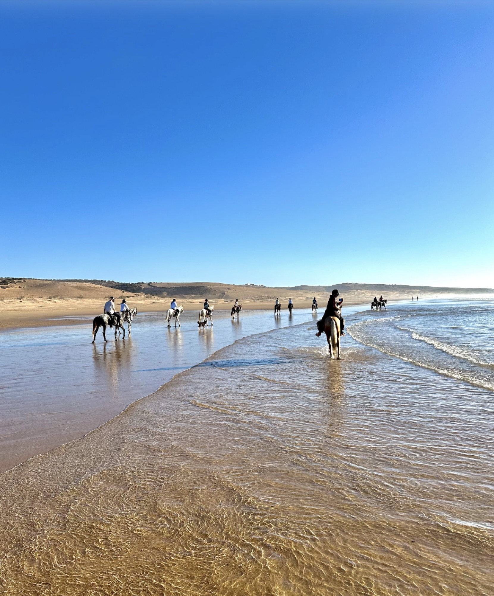
Morocco · horseback
Six days from Agadir toward Essaouira. The sea stays on your left.
01
Agadir airport, then the road to the horses.
Agadir · Tamri
You land at Agadir. Someone from the team is there to meet you, and the drive is to Tamri. The guide and the horses are already waiting.
The first night is a hotel. Dinner is cooked at the house. Sleep comes before the riding starts.
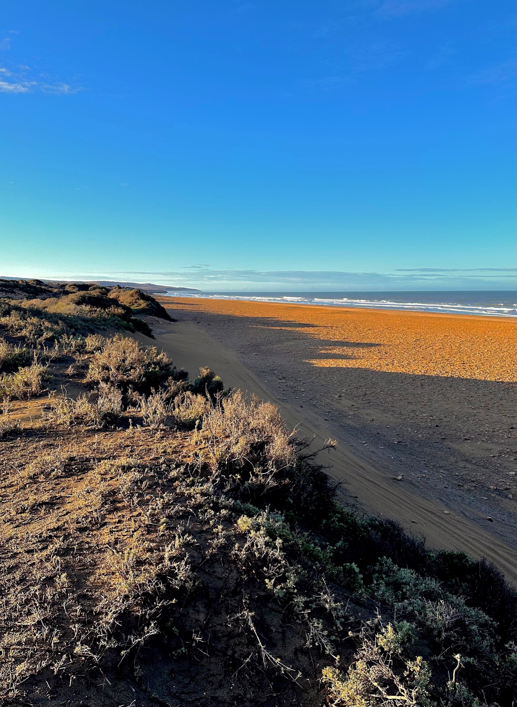
02
Breakfast, then the Atlantic. Camp where you can see the water.
This is the first real riding day, along the coast. When you reach camp, mint tea and something sweet are already out.
Dinner is as the sun goes down. The tents are a few steps from the sea.
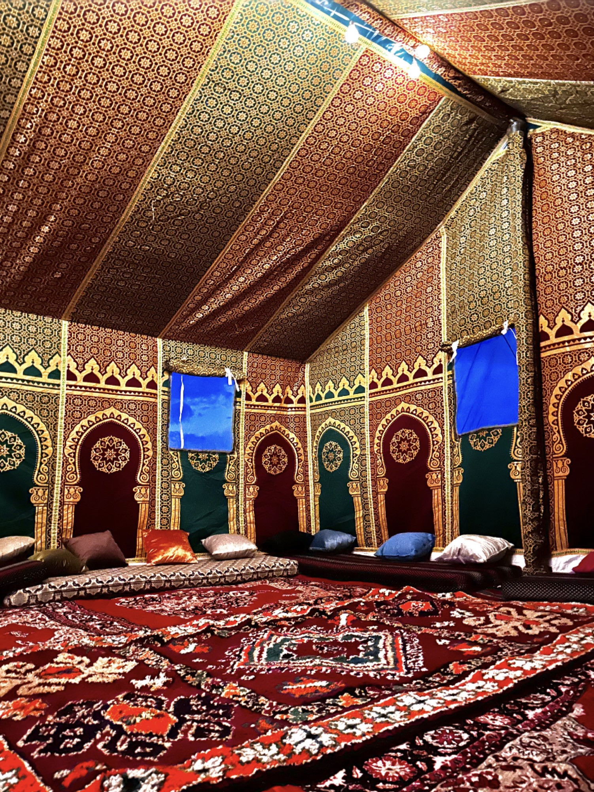
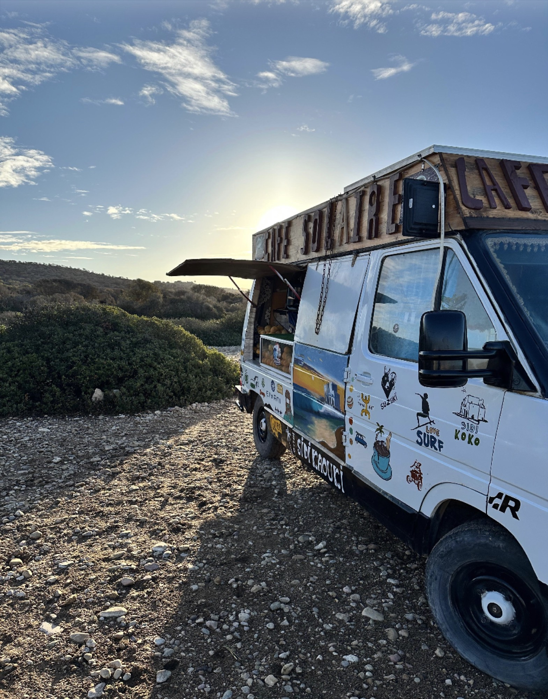
03
Another day on the coast. Room to let the horses go.
You ride the open water and the cliffs. At camp there is time to swim in the Atlantic.
After dark, a fire. That is the evening.
04
Off the beach for a while. A picnic, then a house by the sea.
Sidi Ahmed Essayeh
In the morning the ride leaves the sand and goes through argan trees, in country with few roads. Lunch is a picnic in the shade.
The day ends at Sidi Ahmed Essayeh, in a traditional house. The sun sets over the Atlantic, and the night is quiet.
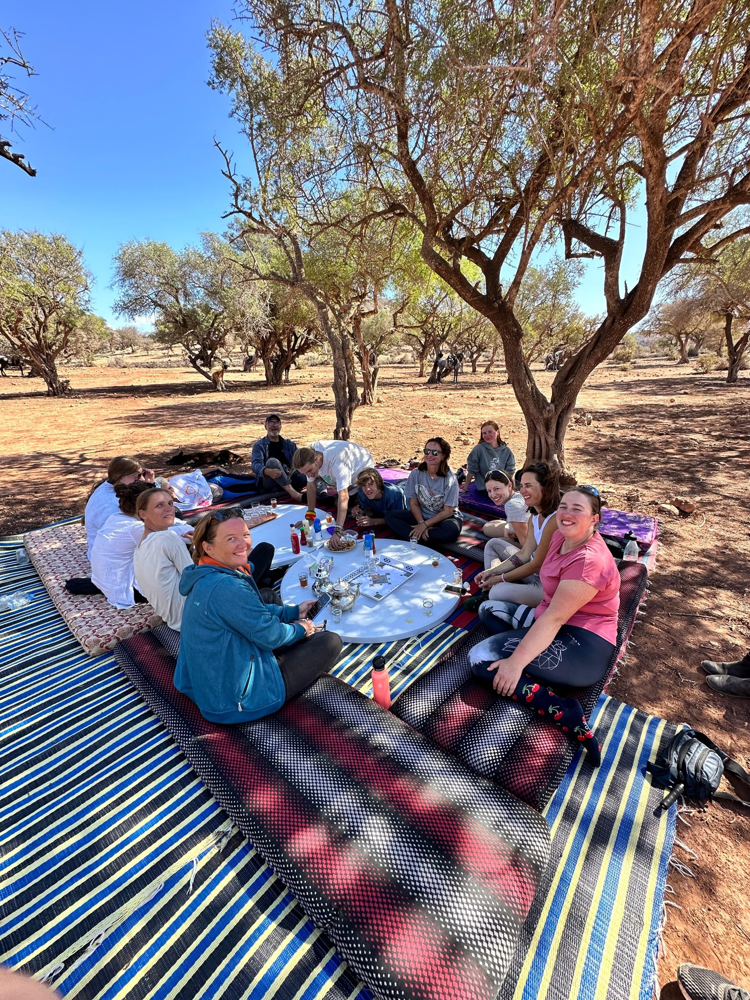
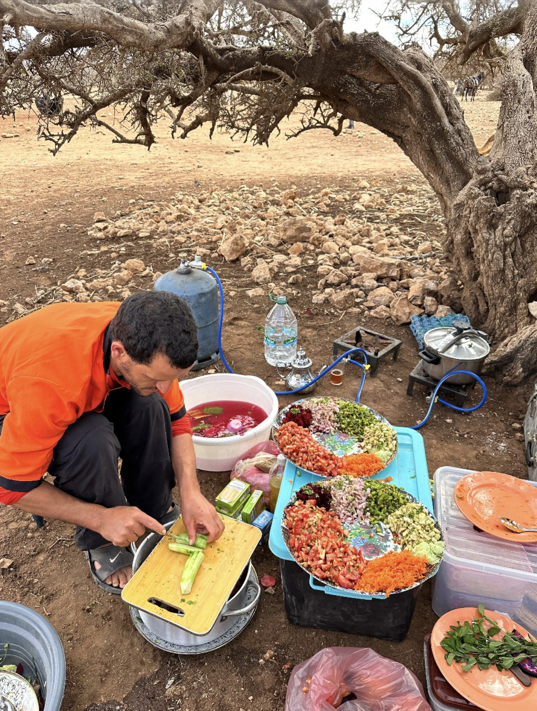
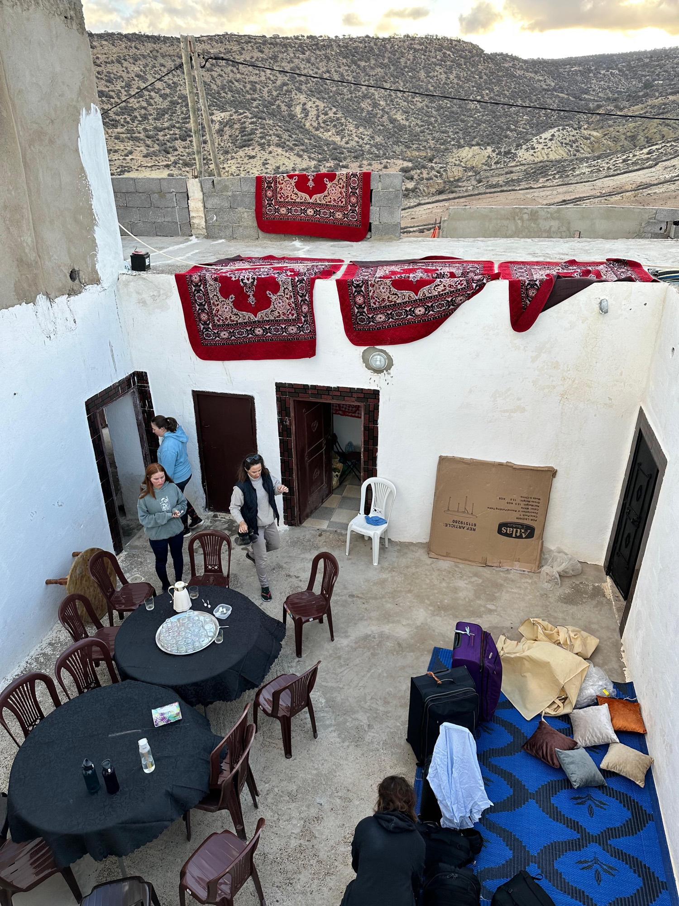
05
Beach, cliffs, a small waterfall, then the last camp.
Sidi M'Barek · Sidi Kaouki
The coast opens again. You ride the beaches and the cliffs toward Sidi M'Barek, where a small waterfall meets the dunes. Picnic is close to the sea.
In the afternoon the ride continues to the last camp, near Sidi Kaouki.
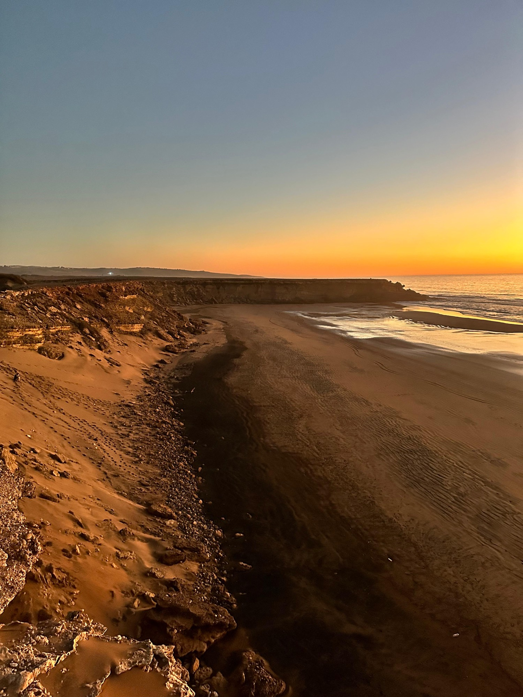
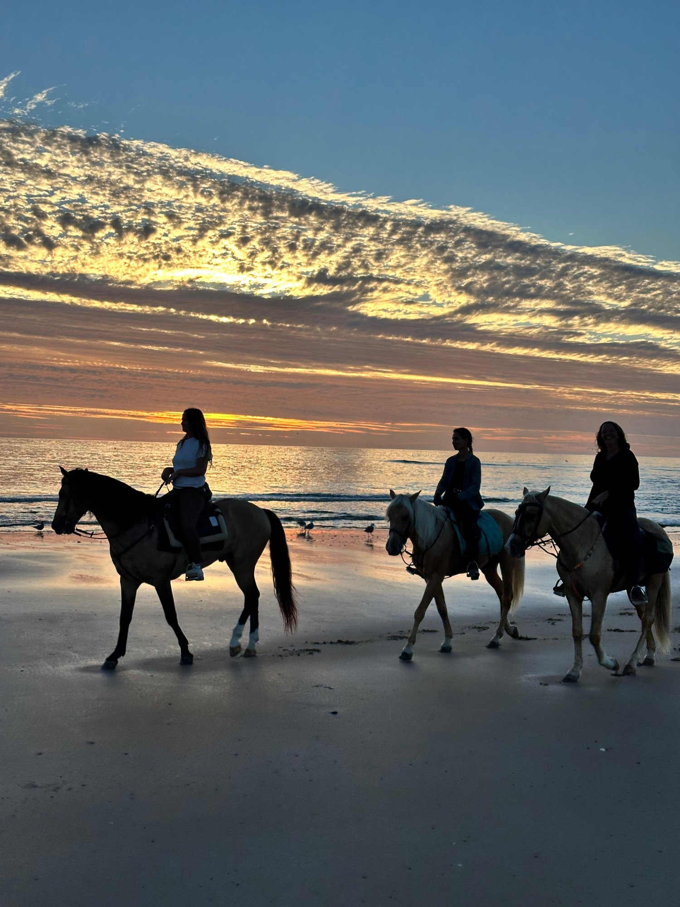
06
One last gallop. Then mint tea, the pool, and dinner.
Sidi Kaouki
The last morning is still in the saddle: the coast, the dunes, one more look at the sea. There is a gallop on the beach, and then the horses turn for home.
The stable is at Sidi Kaouki, near the hotel. Mint tea, a swim in the pool, and dinner.
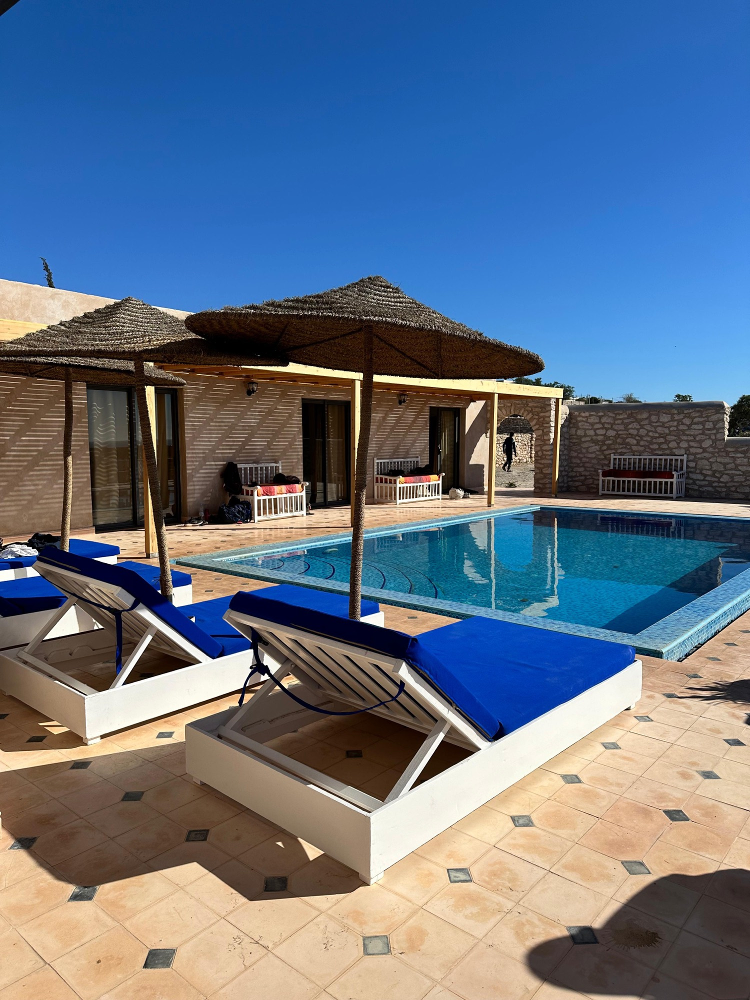
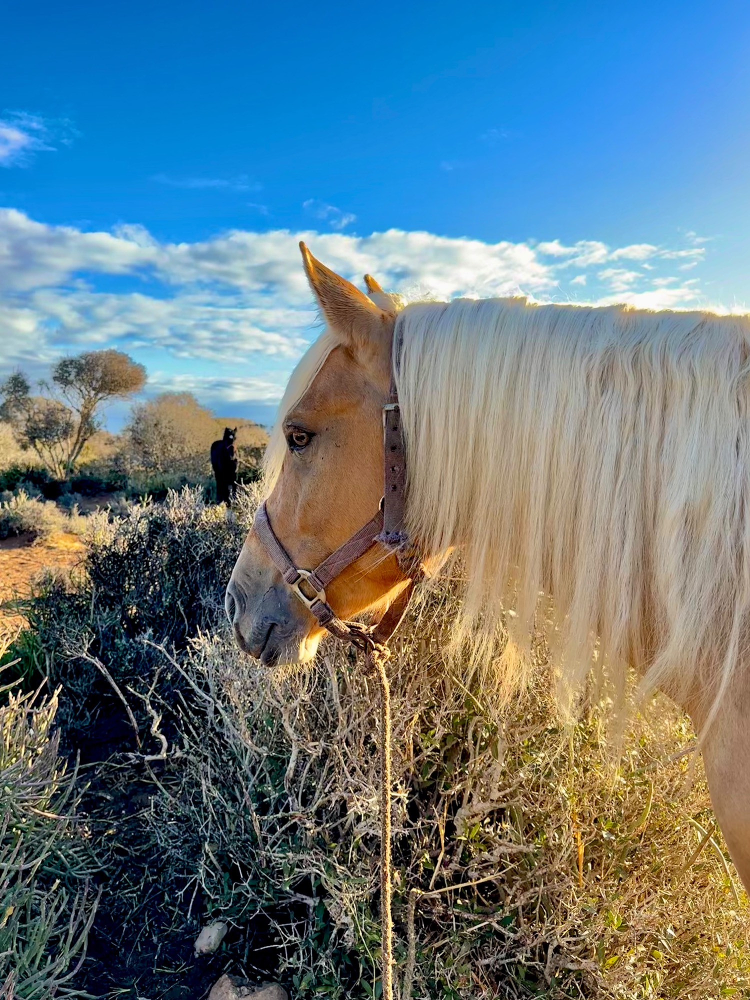
If this is the trip, say so on the form. Nothing is booked from this page. 955 euros for the six days.